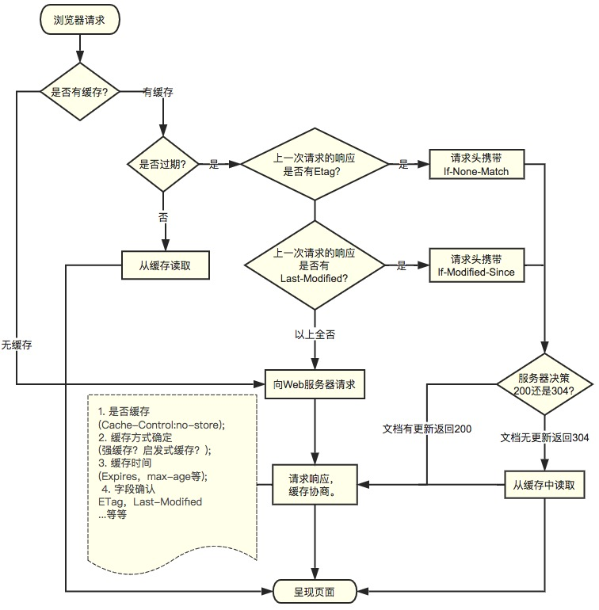

HTTP缓存

一、介绍
Http 缓存机制作为 web 性能优化的重要手段，对于从事 Web 开发的同学们来说，应该是知识体系库中的一个基础环节，同时对于有志成为前端架构师的同学来说是必备的知识技能。
在介绍 HTTP 缓存之前，先简单介绍一下HTTP报文
HTTP 报文就是浏览器和服务器间通信时发送及响应的数据块。
浏览器向服务器请求数据，发送请求(request)报文；服务器向浏览器返回数据，返回响应(response)报文。
报文信息主要分为两部分
- 包含属性的首部(header)--------------------------附加信息（cookie，缓存信息等）与缓存相关的规则信息，均包含在header中
- 包含数据的主体部分(body)-----------------------HTTP请求真正想要传输的部分
二、 缓存分类
HTTP 缓存有多种规则，根据是否需要重新向服务器发起请求来分类，我将其分为两大类(强制缓存，对比缓存）两类缓存规则可以同时存在，强制缓存优先级高于对比缓存，也就是说，当执行强制缓存的规则时，如果缓存生效，直接使用缓存，不再执行对比缓存规则。
2.1 强制缓存
强制缓存（状态码还是200）命中强缓存时，浏览器并不会将请求发送给服务器。在 Chrome 的开发者工具中看到 http 的返回码是200，但是在 Size 列会显示为(from cache)。

对于强制缓存来说，响应 header 中会有两个字段来标明失效规则（Expires/Cache-Control）
使用 chrome 的开发者工具，可以很明显的看到对于强制缓存生效时，网络请求的情况
- Expires
Expires 的值为服务端返回的到期时间，即下一次请求时，请求时间小于服务端返回的到期时间，直接使用缓存数据。
不过 Expires 是HTTP 1.0的东西，现在默认浏览器均默认使用 HTTP 1.1，所以它的作用基本忽略。
另一个问题是，到期时间是由服务端生成的，但是客户端时间可能跟服务端时间有误差，这就会导致缓存命中的误差。
所以HTTP 1.1 的版本，使用 Cache-Control 替代。
- Cache-Control
Cache-Control 是最重要的规则。常见的取值有 private 、public 、no-cache 、max-age ，no-store，默认为 private 。
- private: 客户端可以缓存
- public: 客户端和代理服务器都可缓存（前端的同学，可以认为public和private是一样的）
- max-age=xxx: 缓存的内容将在 xxx 秒后失效
- no-cache: 需要使用对比缓存来验证缓存数据（后面介绍）
- no-store: 所有内容都不会缓存，强制缓存，对比缓存都不会触发（对于前端开发来说，缓存越多越好，so...基本上和它说886）
2.2 对比缓存
对比缓存（状态码还是304）对比缓存，顾名思义，需要进行比较判断是否可以使用缓存。
浏览器第一次请求数据时，服务器会将缓存标识与数据一起返回给客户端，客户端将二者备份至缓存数据库中。
再次请求数据时，客户端将备份的缓存标识发送给服务器，服务器根据缓存标识进行判断，判断成功后，返回304状态码，通知客户端比较成功，可以使用缓存数据。
Last-Modified / If-Modified-Since
- Last-Modified：
浏览器第一次请求一个资源的时候，服务器返回的 header 中会加上 Last-Modify，Last-modify 是一个时间标识该资源的最后修改时间
- If-Modified-Since：
再次请求服务器时，通过此字段通知服务器上次请求时，服务器返回的资源最后修改时间。
服务器收到请求后发现有头 If-Modified-Since 则与被请求资源的最后修改时间进行比对。
若资源的最后修改时间大于 If-Modified-Since ，说明资源又被改动过，则响应整片资源内容，返回状态码200；
若资源的最后修改时间小于或等于 If-Modified-Since ，说明资源无新修改，则响应 HTTP 304，告知浏览器继续使用所保存的cache。
Etag / If-None-Match（优先级高于Last-Modified / If-Modified-Since ）
- ETag(resp)/If-None-Match（req）
与 Last-Modify/If-Modify-Since不同的是，Etag/If-None-Match返回的是一个校验码（ETag: entity tag）。ETag 可以保证每一个资源是唯一的，资源变化都会导致ETag变化*。ETag值的变更则说明资源状态已经被修改。服务器根据浏览器上发送的 If-None-Match 值来判断是否命中缓存。
三、 总结
对于强制缓存，服务器通知浏览器一个缓存时间，在缓存时间内，下次请求，直接用缓存，不在时间内，执行比较缓存策略。
对于比较缓存，将缓存信息中的 Etag 和 Last-Modified 通过请求发送给服务器，由服务器校验，返回304状态码时，浏览器直接使用缓存。